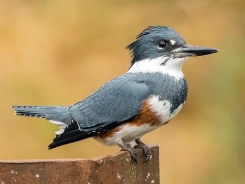

Here is an animal that can be found at Lichterman Nature Center. There are many more in the park but this is one you are likely to see while visiting the park. You may see this type of bird if you hike the lake trails. They spend their time around water, such as lakes.
KINGFISHER